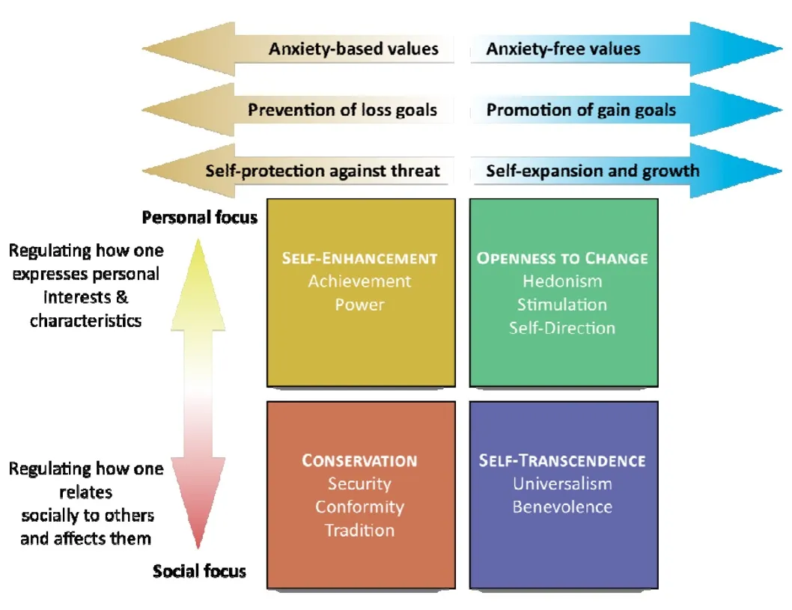
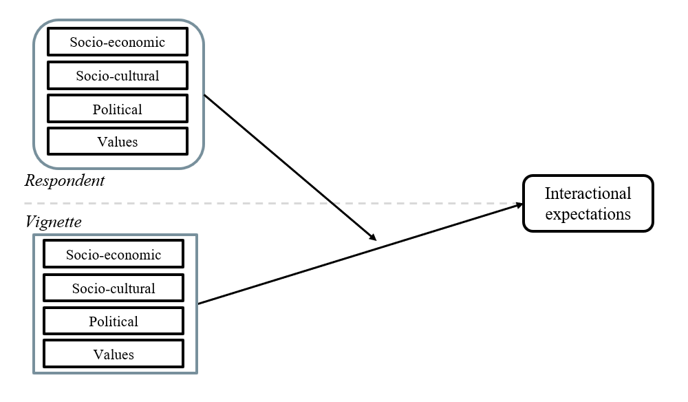
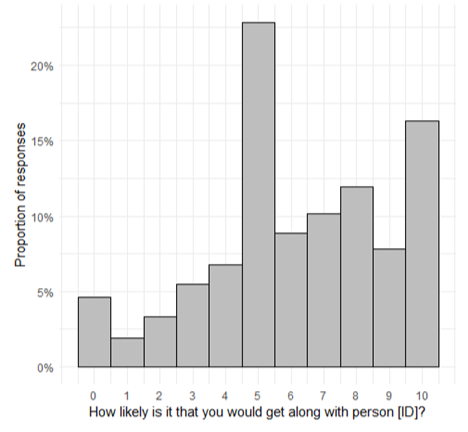
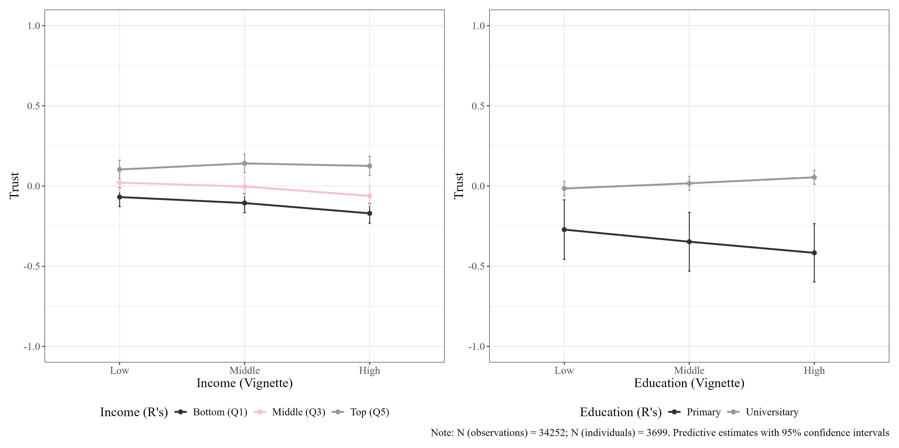
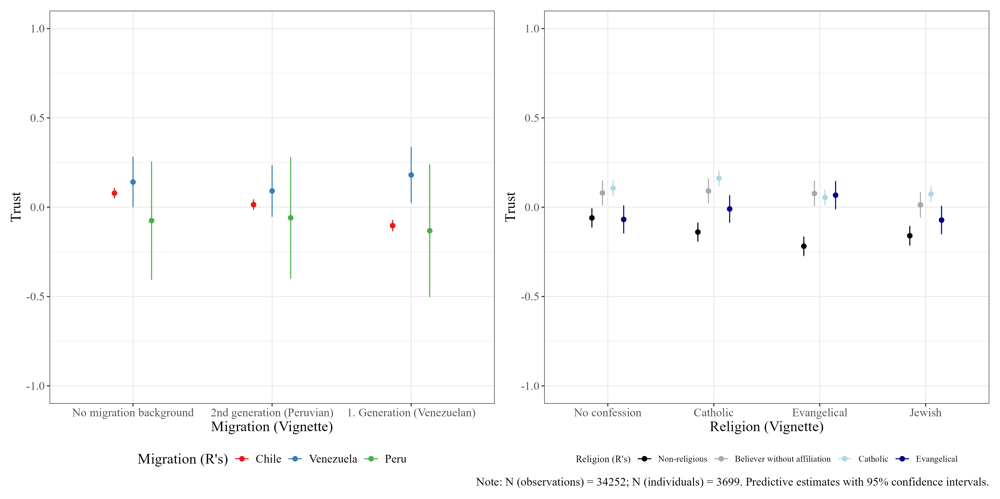
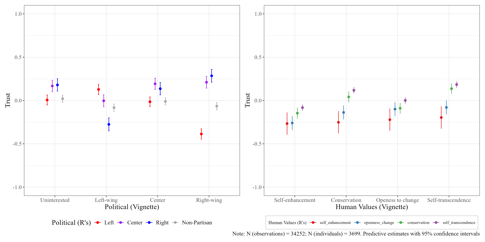
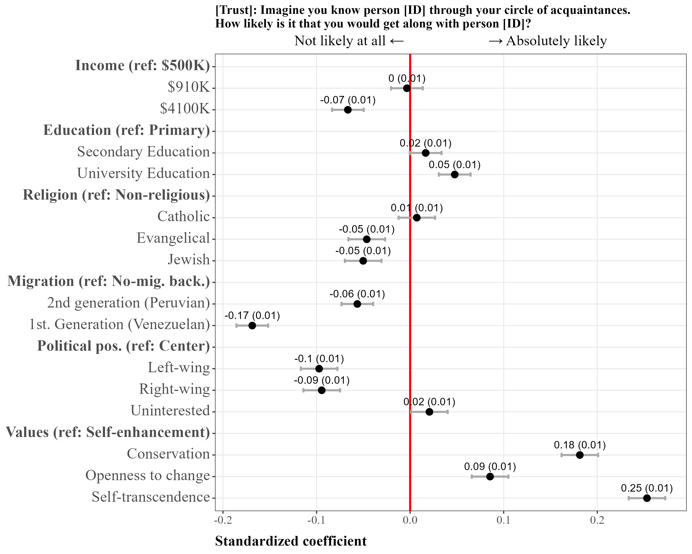

Ties that bond: A Factorial Survey Experiment on Social Cohesion and Group Composition.
Julio Iturra-Sanhueza1,2
1Bremen International Graduate School of Social Sciences, University Bremen
Supervisors:
Dr. Patrick Sachweh (U. Bremen)
Dr. Olaf Groh-Samberg (U. Bremen)
Dr. Simone Schneider (U. Pompeu Fabra)
May, 2026, Bremen
Without the general trust that people have in one another, society itself would fall apart, since very few relationships are based entirely on what is known with certainty about another person, and very few relationships would endure if trust were not as strong as, or stronger than, rational evidence or personal observation.
Simmel, G. (2011, [1900]). The philosophy of money.
Theoretical perspectives on social cohesion
Social Cohesion
- It can be understood as a state of affairs relating to interactions: vertical (between individuals and major institutions) and horizontal (between individuals and groups).
(..) characterized by a set of attitudes and norms that include trust, a sense of belonging, and a willingness to participate and help, as well as their behavioral manifestations (Chan et al., 2006).
- Identifying (i) shared and conflicting interests, (ii) goals, and (iii) values leads to the identification of opportunities for cooperation motivated by bonds of trust and support within your local or national community (Green & Janmaat, 2011).
Contextual factors of social cohesion
Contextual characteristics
Social cohesion research distinguishes constituent elements from their causes, but theoretical mechanisms remain domain-specific and are not integrated into a comprehensive framework.
Three domains shape horizontal cohesion at the aggregate level:
- Socioeconomic: affluence strengthens cohesion; inequality weakens it by segregating social relations and reducing perceived shared fate
- Sociocultural: diversity effects are modest and context-dependent, operating through contact (familiarity) or conflict (threat) mechanisms
- Values: self-transcendence and openness promote cohesion; value polarization erodes it
The scale of analysis
Common limitation across all three domains: mechanisms are inferred at the aggregate level, not studied at the level of between individuals interactions.
This study scales down to the micro-level, focusing on how individuals form positive interactional expectations toward others across (i) socioeconomic, (ii) sociocultural, and (iii) value/ideological social positions.
Theoretical perspectives on social cohesion
Social positions
Objective positions
- Based on Blau’s structural approach, social positions are defined by population distributions across social parameters (Blau, 1977).
- Two parameter types organize objective positions:
- Nominal: group boundaries (e.g., race, religion).
- Graduated: ranked status dimensions (e.g., income, education).
- These produce two key structural properties:
- Heterogeneity (dispersion across categories).
- Inequality (status disparity across ranks).
- Weakly correlated, intersecting parameters can foster intergroup ties; strongly correlated parameters reinforce boundaries (Blau, 1977).
- Objective structure captures opportunities for association while excluding preferences, norms, and values.
Subjective positions
Beyond objective structure, social cohesion research highlights subjective positions: values and worldviews shaping association patterns.
Cultural stratification links status with value-based distinctions in social milieus (Groh-Samberg et al., 2023).
Values are enduring motivational orientations, distinct from attitudes, and guide social evaluation (Kulin & Svallfors, 2013).
Basic Human Values theory structures value orientations into broader motivational domains (Schwartz, 1992, 1994).
Ideological worldviews also matter: left-right alignments shape perceived proximity, trust, and expected interaction (Hjermitslev & Wagner, 2026; Sartori, 1969).
Cohesion therefore depends not only on structural location, but also on perceived cultural and political alignment (Deitelhoff & Schmelzle, 2023; Grunow et al., 2023).
Promoting and inhibiting forces of social cohesion
Socioeconomic positions
Economic affluence tends to strengthen cohesion, while inequality weakens it (Delhey et al., 2023).
Inequality increases social distance and segregation, reducing shared fate and opportunities for interaction across status groups (Pichler & Wallace, 2009; Uslaner & Brown, 2005).
SES cues activate dual mechanisms: status/competence (higher SES can raise trust) and social distance (higher SES can reduce perceived closeness) (Fiske & Markus, 2012; Ridgeway, 2014).
Effects are context-dependent: under high inequality, high-income profiles may trigger distance or threat rather than trust (Salgado et al., 2021).
Promoting and inhibiting forces of social cohesion
Sociocultural positions
Sociocultural heterogeneity has mostly modest and context-dependent effects on cohesion, shaped by local inequality and boundary structures (Baldassarri & Abascal, 2020; Koopmans & Schaeffer, 2015).
Migration cues affect expectations through two competing mechanisms: perceived threat/competition versus positive contact/familiarity (Hainmueller & Hopkins, 2015; Hewstone, 2015).
In this framework, migration background is often judged through perceived contribution and integration into shared social life (Castillo et al., 2023).
Religious cues operate more through symbolic fit with social norms and values, so effects depend on the form and meaning of religiosity in context (Moon et al., 2018; Rowatt & Al-Kire, 2021).
Promoting and inhibiting forces of social cohesion
Value and ideological positions
- Societies with greater degree of shared values show higher levels of social trust, suggesting that common goals are promoted by similarity in human value orientation (Beilmann & Lilleoja, 2015).
They function as evaluation criteria, so certain value profiles can promote or inhibit cohesion (Groh-Samberg et al., 2023).
Values transcend specific actions and situations. Distinguishing them from norms and attitudes that usually refer to specific actions, objects, or situations (Schwartz, 1992)
- According to the theory of basic human values (Schwartz, 1992), values can be divided into four conflicting higher-order values
Promoting and inhibiting forces of social cohesion
Value and ideological positions
Political preferences are socially meaningful cues through which conflict and coordination are organized in democratic life (Grunow et al., 2023).
Ideological positions shape interaction expectations through social identity and perceived political distance (Balliet et al., 2018; Hernández-Lagos & Minor, 2020).
The left-right spectrum works as a symbolic map of group belonging, affecting perceived trustworthiness and openness to reciprocity (Groh-Samberg et al., 2023; Hernández-Lagos & Minor, 2020).
Perceptions of centrists as more accessible are context-dependent: where ideological conflict is intense, moderate positions can be seen as less conflictive (Grunow et al., 2023; Hernández-Lagos & Minor, 2020).
Summary
Social cohesion is a characteristic of a social unit, but it is defined in terms of the social interactions within it.
Social interactions within the unit are the constituent elements of social cohesion.
The characteristics of the social unit, such as inequality, heterogeneity, and institutions (formal or informal), are understood as explanatory factors of cohesiveness, since they affect social interactions.
This study focuses on the horizontal dimension of social cohesion. Particularly, the individual (subjective) expectations toward different social positions as a constitutive component in the formation of social associations within and between groups.
How are different social positions linked to positive interactional expectations, and to what extent does similarity in social position affect them?
This Study

Methods
Factorial survey experiment
Research design: A vignette factorial study is used to explore how specific characteristics of fictional subjects (vignettes) influence the assessments of external observers.
Vignette design:
- Each vignette includes attributes such as demographic or socioeconomic characteristics (e.g., gender, income).
Respondents evaluate these vignettes based on the attributes provided (details on next slide).
Administration: To ensure manageable data collection, each respondent evaluates a limited number of vignettes.
Vignettes dimensions
Factorial universe: 2x3x3x4x3x3x3x4x4 representing a factorial universe of 31,104 possible combinations (impossible to evaluate).
Two steps (D-efficient algorithm in SAS):
- Optimal selection of vignettes (144)
- Organized in blocks (15)
- 9 to 10 vignettes per block
| Dimension | Label | Description (Chile) |
|---|---|---|
| Education | Low | Finished primary school |
| Medium | Finished high school | |
| High | Obtained a university degree | |
| Income | Low | $500.000 |
| Medium | $910.000 | |
| High | $4.100.000 | |
| Migration background | No migration background | Born in Chile, of Chilean parents. |
| 2nd generation | Born in Chile, of Peruvian parents. | |
| 1st generation | Born in Venezuela, came to Chile | |
| Religion | 1st Religious group | Catholic |
| 2nd Religious group | Evangelical | |
| 3rd Religious group | Jewish | |
| Non-religious | Non-religious | |
| Political orientation | Left | left-wing |
| Center | center | |
| Right | right-wing | |
| Politically disinterested | disinterested | |
| Value orientation | Self-transcendence | Being tolerant and helping the people around you |
| Conservation | Feeling safe, adapting to others, and respecting traditions | |
| Self-improvement | Achieving personal success and being in charge | |
| Openness to change | Making your own decisions and leading a fun and adventurous life. |
Example
Person [ID] is [male] and [45 years old]. He was [born in Venezuela, came to Chile], and is [Catholic]. Person A [completed secondary education], is [employed full-time], and has a monthly [income of $4,100,000] at his disposal. He considers himself politically [left-wing]. For Person A, [it is important to make his own decisions and lead a fun and adventurous life].
Outcome
- Imagine you meet a person [ID] through your circle of acquaintances. How likely is it that you will get along with the person [ID]? (get along)
[“Not likely at all.”] 0,1,2,3,4,5,6,7,8,9,10 [“Absolutely likely”]
Data
- Convenience quota sample of adults of the Chilean population (Women= 52.16%)
- Fieldwork: December 2024 - January 2025 (CAWI).
- Analytical sample:
- N = 3,699 individuals
Methods
Mutilevel regression:
The model is a two-level hierarchical linear model:
Level 1 (within respondents): Observations are individual vignettes rated by respondents. Predictors at this level are vignette characteristics (e.g., vignette income).
Level 2 (between respondents): Respondents are the higher-level units. Predictors at this level are respondent characteristics (e.g., respondent income, age, gender).
Cross-level interaction: The effect of a vignette-level predictor (e.g., vignette income) is allowed to vary depending on a respondent-level predictor (e.g., respondent income). This is modeled by including an interaction term.
\[ \begin{aligned} \text{Combined: } \quad Y_{ij} &= \gamma_{00} + \gamma_{01}\text{RespIncome}_j + \gamma_{10}\text{VignetteIncome}_{ij} \\ &\quad + \gamma_{11}(\text{RespIncome}_j \times \text{VignetteIncome}_{ij}) + u_{0j} + u_{1j}\text{VignetteIncome}_{ij} + r_{ij} \end{aligned} \]
Dependent variable
Imagine you meet a person [ID] through your circle of acquaintances. How likely is it that you will get along with the person [ID]? (Get along)

Results
Cross-group interactions (SES)

Cross-group interactions (SC)

Cross-group interactions (Pol-Val)

Discussion and conclusions
Discussion and conclusions
Socioeconomic differences show a pattern of distancing, particularly the withdrawal of individuals with low status from those with high status.
Sociocultural positions have nuanced effects. Migrants tend to be less liked on average; however, this appears to be a relatively stable pattern across groups, with no clear evidence of homophily.
Religious differences between believers and non-believers are more evident, especially between non-religious individuals and Christians. This is possibly reflecting a process of secular change (?).
Discussion and conclusions
- Political divides are noticeable: centrists are generally preferred over both poles.
- Homophily is evident within political groups. Would this be considered polarization?
- Human values emerge as the strongest driver.
- Similarity in values is closely linked positive expectations. Particularly for the those with “self-enhancement” as dominant value.
Thank you for your attention!
- Project GitHub: https://github.com/factorial-cohesion
References
Baldassarri, D., & Abascal, M. (2020). Diversity and Prosocial Behavior. Science, 369(6508), 1183-1187. https://doi.org/10.1126/science.abb2432
Balliet, D., Tybur, J. M., Wu, J., Antonellis, C., & Van Lange, P. A. M. (2018). Political Ideology, Trust, and Cooperation: In-group Favoritism among Republicans and Democrats during a US National Election. The Journal of Conflict Resolution, 62(4), 797-818. https://doi.org/10.1177/0022002716658694
Beilmann, M., & Lilleoja, L. (2015). Social Trust and Value Similarity: The Relationship between Social Trust and Human Values in Europe. Studies of Transition States and Societies, 7(2), 19-30.
Blau, P. (1977). A Macrosociological Theory of Social Structure. American Journal of Sociology, 83(1), 26-54. Recuperado de https://www.jstor.org/stable/2777762
Castillo, J. C., Bonhomme, M., Miranda, D., & Iturra, J. (2023). Social Cohesion and Attitudinal Changes toward Migration: A Longitudinal Perspective amid the COVID-19 Pandemic. Frontiers in Sociology, 7. https://doi.org/10.3389/fsoc.2022.1009567
Chan, J., To, H.-P., & Chan, E. (2006). Reconsidering Social Cohesion: Developing a Definition and Analytical Framework for Empirical Research. Social Indicators Research, 75(2), 273-302. https://doi.org/10.1007/s11205-005-2118-1
Deitelhoff, N., & Schmelzle, C. (2023). Social Integration Through Conflict: Mechanisms and Challenges in Pluralist Democracies. KZfSS Kölner Zeitschrift Für Soziologie Und Sozialpsychologie, 75(1), 69-93. https://doi.org/10.1007/s11577-023-00886-3
Delhey, J., Dragolov, G., & Boehnke, K. (2023). Social Cohesion in International Comparison: A Review of Key Measures and Findings. KZfSS Kölner Zeitschrift Für Soziologie Und Sozialpsychologie, 75(1), 95-120. https://doi.org/10.1007/s11577-023-00891-6
Fiske, S. T., & Markus, H. R. (2012). Facing Social Class: How Societal Rank Influences Interaction. New York: Russell Sage Foundation.
Green, A., & Janmaat, J. G. (2011). Regimes of Social Cohesion. London: Palgrave Macmillan UK. https://doi.org/10.1057/9780230308633
Groh-Samberg, O., Schröder, T., & Speer, A. (2023). Social Milieus and Social Integration. From Theoretical Considerations to an Empirical Model. KZfSS Kölner Zeitschrift Für Soziologie Und Sozialpsychologie, 75(1), 305-329. https://doi.org/10.1007/s11577-023-00892-5
Grunow, D., Sachweh, P., Schimank, U., & Traunmüller, R. (2023). Social Integration: Conceptual Foundations and Open Questions. An Introduction to This Special Issue. KZfSS Kölner Zeitschrift Für Soziologie Und Sozialpsychologie, 75(1), 1-34. https://doi.org/10.1007/s11577-023-00896-1
Hainmueller, J., & Hopkins, D. J. (2015). The Hidden American Immigration Consensus: A Conjoint Analysis of Attitudes toward Immigrants. American Journal of Political Science, 59(3), 529-548. Recuperado de https://www.jstor.org/stable/24583081
Hernández-Lagos, P., & Minor, D. (2020). Political Identity and Trust. Quarterly Journal of Political Science, 15(3), 337-367. https://doi.org/10.1561/100.00018063
Hewstone, M. (2015). Consequences of Diversity for Social Cohesion and Prejudice: The Missing Dimension of Intergroup Contact. Journal of Social Issues, 71(2), 417-438. https://doi.org/10.1111/josi.12120
Hjermitslev, I. B., & Wagner, M. (2026). Beyond Partisanship: Ideological Identities and Affective Evaluations. European Journal of Political Research, 1-22. https://doi.org/10.1017/S147567652510056X
Koopmans, R., & Schaeffer, M. (2015). Relational Diversity and Neighbourhood Cohesion. Unpacking Variety, Balance and in-Group Size. Social Science Research, 53, 162-176. https://doi.org/10.1016/j.ssresearch.2015.05.010
Kulin, J., & Svallfors, S. (2013). Class, Values, and Attitudes towards Redistribution: A European Comparison. European Sociological Review, 29(2), 155-167. https://doi.org/10.1093/esr/jcr046
Moon, J. W., Krems, J. A., & Cohen, A. B. (2018). Religious People Are Trusted Because They Are Viewed as Slow Life-History Strategists. Psychological Science, 29(6), 947-960. https://doi.org/10.1177/0956797617753606
Pichler, F., & Wallace, C. (2009). Social Capital and Social Class in Europe: The Role of Social Networks in Social Stratification. European Sociological Review, 25(3), 319-332. https://doi.org/10.1093/esr/jcn050
Ridgeway, C. L. (2014). Why Status Matters for Inequality. American Sociological Review, 79(1), 1-16. https://doi.org/10.1177/0003122413515997
Rowatt, W. C., & Al-Kire, R. L. (2021). Dimensions of Religiousness and Their Connection to Racial, Ethnic, and Atheist Prejudices. Current Opinion in Psychology, 40, 86-91. https://doi.org/10.1016/j.copsyc.2020.08.022
Salgado, M., Núñez, J., & Mackenna, B. (2021). Expectations of Trustworthiness in Cross-Status Interactions. Social Science Research, 99, 102596. https://doi.org/10.1016/j.ssresearch.2021.102596
Sartori, G. (1969). Politics, Ideology, and Belief Systems. American Political Science Review, 63(2), 398-411. https://doi.org/10.2307/1954696
Schwartz, S. H. (1992). Universals in the Content and Structure of Values: Theoretical Advances and Empirical Tests in 20 Countries. En Advances in Experimental Social Psychology (Vol. 25, pp. 1-65). Elsevier. https://doi.org/10.1016/S0065-2601(08)60281-6
Schwartz, S. H. (1994). Beyond Individualism/Collectivism: New Cultural Dimensions of Values. En Individualism and Collectivism: Theory, Method, and Applications (pp. 85-119). Thousand Oaks, CA, US: Sage Publications, Inc.
Uslaner, E. M., & Brown, M. (2005). Inequality, Trust, and Civic Engagement. American Politics Research, 33(6), 868-894. https://doi.org/10.1177/1532673X04271903
Social positions and social cohesion
